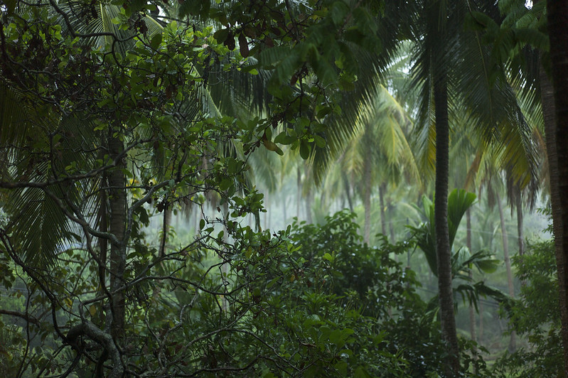

My Characters environment is a utopia kind of place, very calm, peaceful, and very animal friendly. Chirps and wildlife could be heard throughout the land, people are super friendly with the animals, making sure animals lives matter. The cities are very small right above the trees and wildlife not destroying wildlife, many people travel with the boltz to go different cities. The trees and flowers and everything are all shaped differently like flowers are big as trees with electracy coming out of them, trees are all tiny as flowers making them easy to pick up and take with you to plant and they could grow super big if you sprinkle star dust on top of them. Weather there is mostly cloudy and clouds of thunder usually passing by occasionally but most for the most part everyone in the cities enjoys the thunder.
